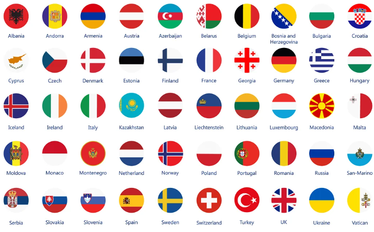

About
This website is my first project using HTML and inline CSS.
Do you want to learn more about European countries? Click on the country's flag:

This website is my first project using HTML and inline CSS.
Do you want to learn more about European countries? Click on the country's flag: